Topic: CL341

| CLICK Project Loader Ladder and Firmware Only - Without Intelligent Modules |
Topic: CL341
|
This method of CLICK Project Loader is used to open a CLICK Loader File (without Intelligent Module(s)) and write the CLICK Project to the CLICK PLC with or without the Password protection. If you want to make a Backup before writing the new CLICK Loader File please go to CL343 - Make Backup Copy of PLC.
Please refer to the How to Use the CLICK Project Loader topic in this Help File.
Below are the steps to write a CLICK Loader File to a CLICK PLC WITHOUT Intelligent Modules:
Ensure the Write Project Loader File radio is selected and press Next>>.
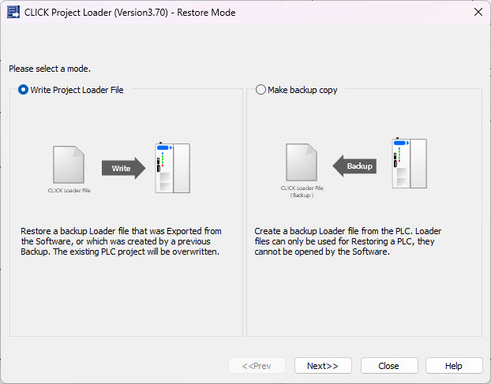
Select the CLICK Loader File: The first step is to Select the CLICK Loader File that was sent from the OEM user. Click the browse button  located on the right side of the test field in the image below to open the Open window. Select the proper CLICK Loader File and click Open.
located on the right side of the test field in the image below to open the Open window. Select the proper CLICK Loader File and click Open.
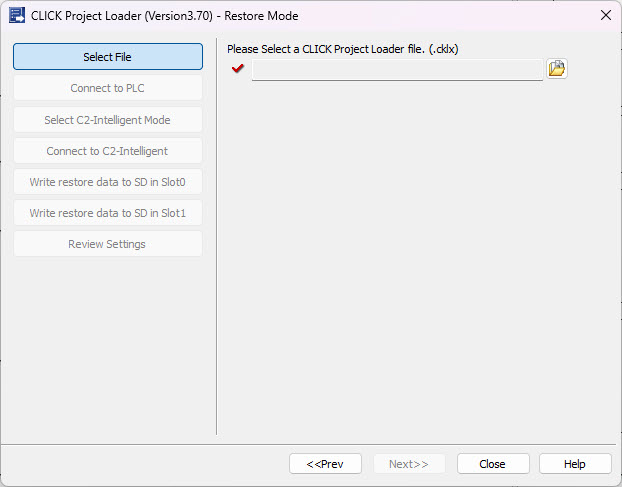
Select the proper CLICK Loader File and click Open.
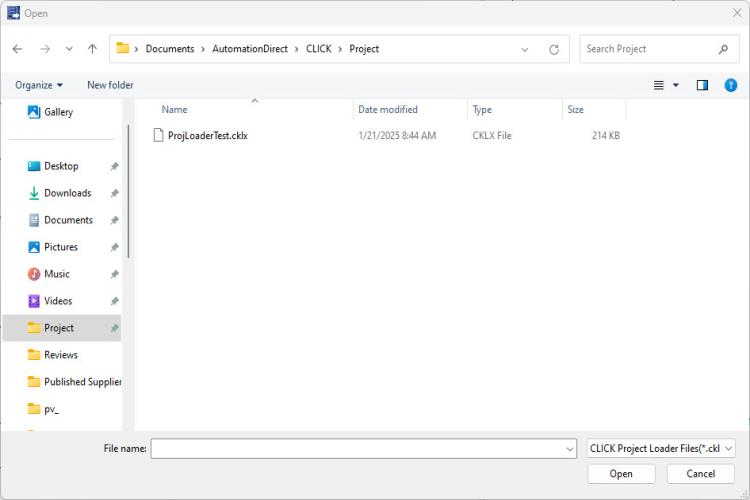
Ensure file path looks correct and text box has a Green Check  beside it. Then press Next button on the Project Loader screen.
beside it. Then press Next button on the Project Loader screen.
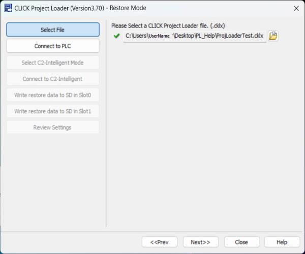
Press the Setup button to select the target CLICK PLC to restore to.
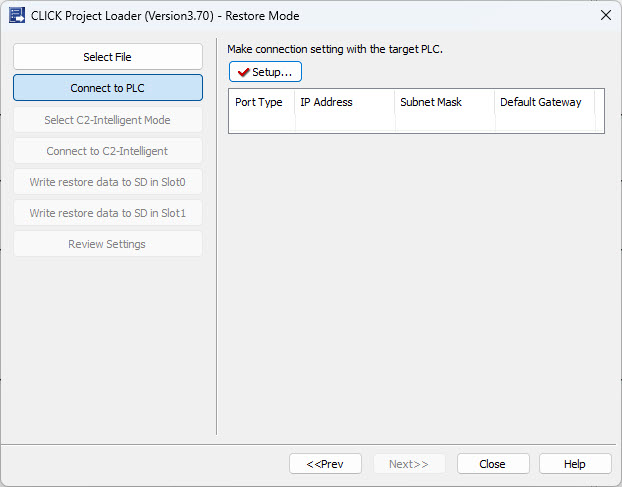
Highlight the appropriate CLICK PLC and press OK.
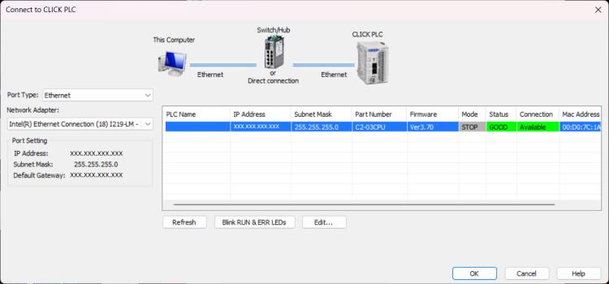
Ensure CLICK PLC IP Address is correct and Setup has a Green Check beside it. Then press Next button on the Project Loader screen.
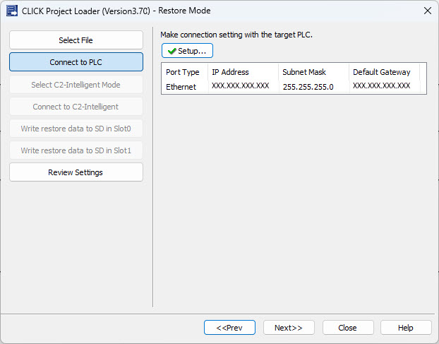
Ensure all data is correct on the Review screen and press Start.
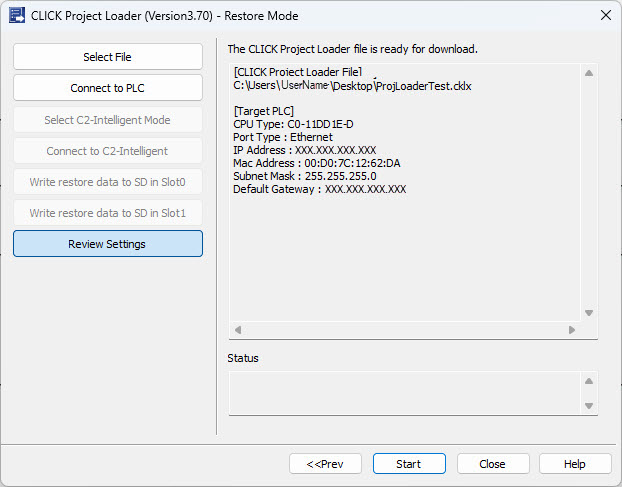
|
|
Note: The PLC Mode Switch must be set to the STOP Mode in order for the CLICK Project Loader to proceed. If the PLC is set to RUN Mode, an Error window like the one shown below will display.
|
|
|
|
Note: Starting with Ver3.40 the Project Loader will check the CPU part number and prevent from downloading an incompatible project file. There are three groups of compatible CPUs:
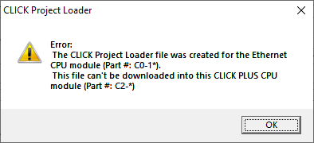 |
|
Loading bar shows status as CLICK PLC is Restored
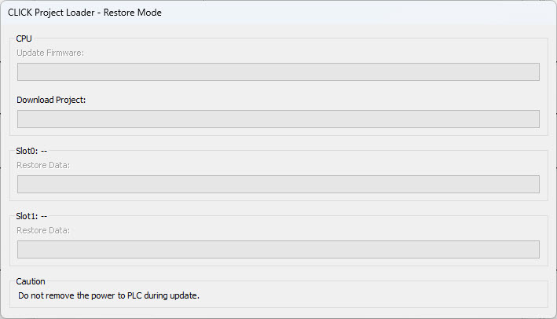
Once all the CLICK Project Loader tasks are Completed, the Operation Complete window shown below opens, indicating all tasks Completed successfully.
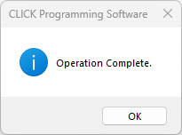
How to use the CLICK Project Loader